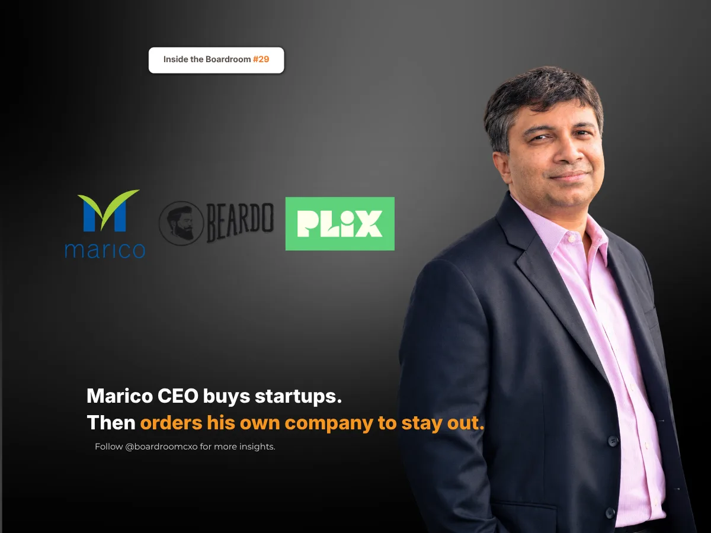

Key Takeaways
- Saugata Gupta concluded that a large FMCG company's appetite for risk and failure was wrong for starting digital-first brands, so Marico bought founder-led brands instead: Beardo from 2017, Just Herbs in 2021 and Plix from 2023.
- He kept Marico out of their way. "The moment multiple MBAs start adding value to a brand, these startup brands stutter," he told analysts in January 2021.
- Marico's digital-first brands exited FY26 at an annual run rate above ₹1,100 crore, Plix's revenue doubled to ₹864 crore, and Marico paid over six times more per share of Plix in 2026 than in 2023. Boards should be honest about what their own organisation is built to do.
Saugata Gupta, MD and CEO of Marico, the company behind Parachute and Saffola, has said something few CEOs say out loud: that the company he runs is not built to do everything.
His case in point was digital brands, the kind that are born and sold online.
Who Is Saugata Gupta?
Saugata Gupta is the managing director and chief executive of Marico. An engineer from IIT Kharagpur and an alumnus of IIM Bangalore, he joined Marico in 2004 and has run it since 2014.
For someone who had spent two decades inside the company, admitting its limits was not a small thing.
Why He Did Not Build Digital Brands In-House
Gupta's view was that a large FMCG company and a young digital brand need different things. The core business runs on scale and takes few, careful risks. A young D2C brand needs to take many small ones, and to fail often. "The risk-taking appetite is different," he told The Core. After 15 to 20 years in a traditional setup, he said, "it's very difficult to adopt."
Most leaders would have hired a bigger digital team and tried again.
He bought founders instead.
The Brands He Bought
His first bet came in March 2017. Marico agreed to take a 45% stake in Beardo, a men's grooming brand then well under two years old that made about 75% of its sales online. In 2020 it bought the rest of Beardo. Then came Just Herbs in 2021, and Plix, a plant-based nutrition brand, in July 2023.
Marico usually takes a majority stake, lets the founders keep running the business for a few years, and learns from them before integrating it.
Keeping Marico Out of the Way
His second decision was harder. He kept the founders independent, even from Marico.
"One of the reasons startup brands work well is because there is not too much MBA interference. The moment multiple MBAs start adding value to a brand, these startup brands stutter," he told analysts in January 2021.
Beardo ran on its own processes and systems, in a separate business unit for digital brands that operated independently of the rest of Marico.
What the Founders' Work Is Now Worth
Both decisions paid off. Marico's digital-first brands exited FY26 at an annual revenue run rate of more than ₹1,100 crore. Beardo makes money, and Plix has broken even. Plix's parent company doubled its revenue in FY26, to ₹864 crore from ₹433 crore.
One pair of numbers shows what those founders' work is now worth. In July 2023, Marico agreed to pay ₹369 crore for 58% of Plix, in stages. In October 2026, it paid ₹1,012 crore for another 24.09%, taking its stake to 84%. Per percentage point, that is more than six times the 2023 price, and Marico has agreed to buy the rest by July 2027.
The Boardroom Lesson: Size Can Fund an Idea, but Rarely Grows One
Large companies have money, distribution and talent. What they often lack is tolerance for the mess that a young brand needs: fast decisions, frequent failures and founders who do not wait for approval.
Size can fund a new idea. It rarely lets one grow.
Gupta's answer was to separate the two. Marico supplied the capital and the patience. The founders supplied the speed.
Common Mistakes Boards Make When Buying a Startup Brand
Boards of large consumer companies acquiring D2C and digital-first brands tend to make the same three errors.
They integrate too fast. Moving a young brand onto the parent's systems, processes and approval layers on day one can kill the speed that made it worth buying.
They send in their own managers to fix it. A team trained on large, low-risk brands will often manage a young brand toward caution. Gupta's line about MBAs is the warning.
They judge it on the parent's metrics too early. A brand that is still finding its customers will not look like Parachute in its first years. Give it a path to profit, not the parent's margin on day one.
A Framework for Hiring Leaders for Digital-First Brands
When we brief boards on a CXO search for a consumer company building or buying digital brands, we push for three specific checks.
- Be honest about what your organisation is built for. If the core business rewards caution, do not expect it to incubate risky brands. Decide early whether to build, buy or partner.
- Hire for entrepreneurial attitude, not just digital experience. Gupta has said Beardo's first CEO came from legacy brands but was an entrepreneur by attitude. That matters more than the CV.
- Protect the founder's room to run. Agree in advance how long founders will run the business, which decisions they keep, and when integration begins.
Why This Belongs in the Boardroom, Not Just the Business Pages
This sits alongside the story we told of Marico's war with Hindustan Lever: another moment when the company chose a harder, longer path over the obvious one. And it is the other side of the story we told of Varun Alagh at Honasa, a founder who built a digital-first brand into a listed company.
Knowing what your company is not built for is a strategic advantage. Boards that hire well look for leaders who can say it.
Frequently Asked Questions
Who is Saugata Gupta?
Saugata Gupta is the managing director and CEO of Marico, the company behind Parachute and Saffola. An engineer from IIT Kharagpur and an alumnus of IIM Bangalore, he joined Marico in 2004 and has led it since 2014.
Which digital-first brands has Marico acquired?
Marico's digital-first brands include Beardo, a men's grooming brand in which it took a 45% stake in March 2017 and bought out in 2020; Just Herbs, acquired in 2021; and Plix, a plant-based nutrition brand, from July 2023.
Why did Marico buy D2C brands instead of building them?
Saugata Gupta's view is that a large FMCG company's appetite for risk and failure is different from what a young digital brand needs. Marico chose to buy founder-led brands and let the founders run them independently, rather than build them with its own teams.
How big are Marico's digital-first brands?
Marico's digital-first portfolio exited FY26 at an annual revenue run rate of more than ₹1,100 crore. Plix's parent company, Satiya Nutraceuticals, doubled its FY26 revenue to ₹864 crore.
How much has Marico paid for Plix?
In July 2023, Marico agreed to pay ₹369 crore for 58% of Plix's parent, Satiya Nutraceuticals, in stages. In October 2026 it paid ₹1,012 crore for another 24.09%, taking its holding to 84.09%, and it plans to buy the remaining stake by July 2027.
Sources
- Business Standard, Marico buys 45% stake in Zed Lifestyle, March 2017
- Retail4Growth, FMCG major Marico takes over men's grooming startup Beardo, July 2020
- Marico Limited, Q3 FY21 Earnings Conference Call transcript, January 2021
- The Core, Marico CEO Saugata Gupta on its D2C business and India's changing consumption patterns, November 2024
- Business Today, Marico to acquire 58% stake in Satiya Nutraceuticals for Rs 369 crore, July 2023
- Storyboard18, Marico's digital-first brands cross ₹1,100 crore ARR, August 2026
- Kotak Neo, Marico acquires another 24.09% in Plix parent for ₹1,012 crore, raises stake to 84.09%, October 2026
Related Reading
Refused to Blink: The Boardroom Lesson Behind Marico's War With Hindustan Lever
Read → R · 02 Founder Leadership · November 2026Varun Alagh: When Honasa Fell 40%, He Bought More
Read → R · 03 Founder Leadership · July 2026Sudhir Sitapati: Why He Left HUL's Safest Seat for Godrej
Read →Building or buying a digital-first brand, and need leaders who can run it like founders?
We screen for leaders who know when a large company should step back from a young brand, not just how to scale one. Brief us on your next CXO mandate and we will tell you what the market actually has to offer.
Brief Us on a Mandate See all Marketing & CMO roles we fill →